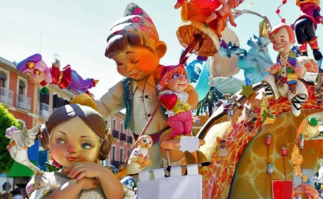
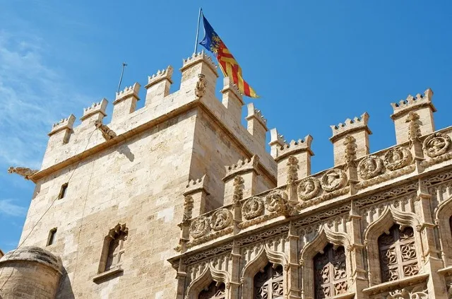
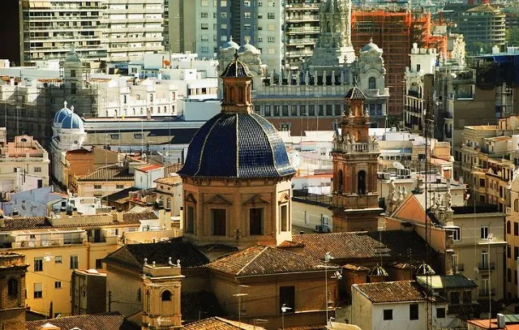

Tourist Places To Visit in Valencia
On the banks of the Turia River, which flows out into the surrounding Mediterranean Sea, Valencia sits as one of the most culturally rich and diverse cities in Spain. A growing tourist hotspot in Spain, it offers visitors a wonderfully unique combination of the old and new, drawing influences from modern and ancient structures over the course of its history. The City of Arts and Sciences is the standout tourist spot in the city and is hub of all cultural and scientific events on offer. Additionally, the city is home to exquisite cathedrals and bell-towers that draw design enthusiasts from all over the world. There are more than enough quality places here to draw visitors with varying interests and budgets
City of Arts and Sciences
Undoubtedly, the best place to visit in the city is the City of Arts and Sciences. This massive, modern compound along the banks of the Turia River features some of the most state of the art structures in Europe and unconventional architecture from some of the world’s most prominent designers. The compound includes a cinema, botanical garden, aquarium, science museum, opera house and even a concert hall. There are cultural events and festivals in this space throughout the year and it is not to be missed by any visitors venturing to Valencia.
Las Fallas Festival
During the Fiesta de San José which is a festival in dedication to Saint Joseph, the entire city comes alive. This celebration involves imaginative fixings termed as “fallas”, huge floating figurines using Paper-Mache as the base materials. There is a wonderful atmosphere in the city during this part of the year, making it a must-visit place.
Oceanographic Aquarium

Félix Candela’s masterful work is one of the best places to visit in the city. The aquarium is the largest in Europe and forms a part of the City of Arts and Sciences. This is an incredible place for visitors of all ages and interests as it houses an incredible 500 diverse marine species and nearly 45,000 different creatures. There is also an underwater café here that is a great place to stop off for a coffee and bite to eat.
La Lonja de Seda
One of the finest examples of Gothic architecture in the city, this structure was created way back in the 15th century and served as the major hub for the silk trade in Valencia. It looks like an ancient fortress with its notched facade and has a massive bell tower as its neighbour. Visitors can climb up to the top of the tower and enjoy the surrounding views on offer. This is one of the best places to visit.
Mercado Central

The central market of the city, this is one of the most enjoyable spots to visit for foodies and hungry tourists alike. Built in the Art Nouveau style in 1928, this marketplace is a lavishly decorated space that is home to hundreds of local and international vendors selling some of the freshest and most delicious food items in the world. It is a great place to have a meal or just shop for some locally produced ingredients.
Church of Saint Nicholas of Bari and Saint Peter the martyr

Its local name is Parroquia de San Nicolás de Bari y San Pedro Mártir. This church serves as another prime example of Gothic and Baroque styles of architecture. Created in the 13th century, the gorgeous stained-glass, intricate carvings and charming chapels make it one of the most popular tourist spots in the city.
Cathedral of Valencia and Miguelete Tower
This Gothic masterpiece along with its neighbouring tower are both must-visit places in Valencia. Work on this Roman Cathedral began as early as the 13th century and the design involves influences from the Baroque era as well. Additionally, important historical artefacts like the Holy Chalice and works of art from some of Spain’s most influential artists like Goya and Maella can be found here. It is a dream for historians and design lovers alike.
Church of Saint Thomas and Saint Phillip
Designed in 1725, this masterful structure was registered as a National Historic Monument later in 1982. The external façade of this church is designed using Baroque influences and is modelled around the Il Gesu Church in Rome. The distinct blue dome is the standout feature of this structure. It is one of the best places to visit due to the daily mass that is held here, which is a meditative experience for curious visitors.